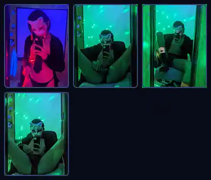
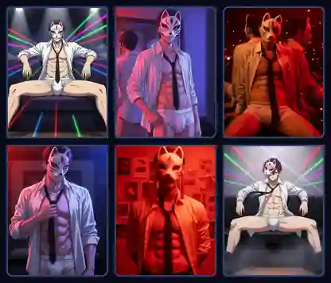
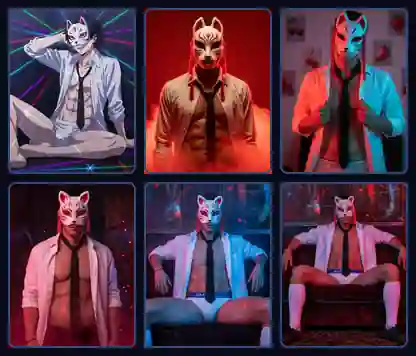

IDENTIFICADOR CONSTANTE
White Kitsune/ Red Tassels
Máscara japonesa blanca de rostro completo con patrones grabados en rojo intenso y dos borlas rojas laterales. Oculta la expresión humana y convierte el rostro en una firma visual reconocible.
Una identidad modular entre el misticismo Kitsune, la elegancia desprolija y la estética urbana-industrial. Esta sección reúne el ADN visual de DCX, sus apariencias, sus escenarios cromáticos y una selección de las referencias que permiten mantener su continuidad en futuras generaciones.
DCX nació durante su fase de desarrollo como «DC» y evolucionó hacia una identidad visual consolidada. La máscara no es un accesorio intercambiable: es el sello que separa el rostro humano de la presencia enigmática del personaje.
Los rasgos invariantes permiten reconocer a DCX incluso cuando cambian la ropa, la iluminación, el encuadre o la técnica gráfica.
La identidad se construye desde un contraste: la máscara Kitsune es ceremonial y misteriosa; la camisa, la corbata y los escenarios son urbanos y contemporáneos. El resultado es una figura que oscila entre elegancia y desorden, distancia y exposición, control y teatralidad.
Máscara japonesa blanca de rostro completo con patrones grabados en rojo intenso y dos borlas rojas laterales. Oculta la expresión humana y convierte el rostro en una firma visual reconocible.
Figura atlética, esbelta y definida. La fotografía establece el límite de estilización; algunas ilustraciones exageran el volumen muscular y no deben convertirse automáticamente en la referencia base.
Accesorio oscuro y fino en la muñeca izquierda. En selfies frente al espejo hay que vigilar la inversión de lateralidad.
Un código formal desplazado de su contexto: se lleva sobre el torso y rompe la lectura convencional del uniforme de oficina.
Enigmática, dual y provocativa. El rostro queda fuera de la negociación emocional; la pose, la ropa y la luz comunican la escena.
Atuendo y luz son variables independientes: cada look tiene su lógica de materiales, pero puede combinarse con más de una familia lumínica.
Camisa blanca oversized completamente abierta, corbata negra directamente sobre la piel y prenda interior blanca texturizada o de malla. En la versión consolidada, la banda de cintura azul AMX/AM> reemplaza la antigua exploración CK/arcoíris. La etapa histórica se conserva como antecedente, no se mezcla con el canon actual.
Chaqueta biker negra abierta, malla de red negra como capa base, cadena industrial gruesa, prenda interior negra, botas militares y calcetines amarillo mostaza con puntos oscuros. El conjunto completo debe conservar sus materiales y no reducirse a «ropa negra» genérica.
Adonis no es un outfit equivalente a SXW o Gloom Grass: es una modalidad de encuadre. El torso y las líneas ilíacas se convierten en centro compositivo; la neblina o el recorte de cámara ocultan lo que queda fuera del límite visual previsto. La ocultación es parte del diseño.
El color no es un fondo genérico. Determina la atmósfera, la lectura de los materiales y la energía de la escena.
Contraste bícromo: una mitad queda bañada por azul frío y la otra recibe rojo o magenta cálido. Bokeh rojo, puntos de luz y láseres refuerzan el entorno de club o rave. La división de temperatura sobre el personaje es más importante que simplemente poner luces azules y rojas detrás.
La escena entera queda sumergida en rojo profundo y saturado. Los puntos rojos mantienen textura; un lens flare azul eléctrico, muy fino y horizontal, corta la monocromía como contraste puntual. No debe confundirse con un escenario simplemente rojo.
Monocromía verde saturada con bokeh y reflejos esmeralda sobre piel, cuero y superficies reflectantes. La sensación es industrial, ciberpunk y deliberadamente tóxica, como un laboratorio nocturno o un espacio técnico clandestino.
Veintidós referencias seleccionadas entre las 59 imágenes únicas, desplegadas en cuatro láminas ligeras para que cada grupo cargue por separado y pueda ampliarse.
Seis referencias iniciales: identidad Kitsune, caída de la camisa, encuadre corporal y primeras variaciones de iluminación.

Gloom Grass, Grass Bass y las lecturas de espejo: texturas, prendas, accesorios y continuidad cromática.

La traducción del personaje al lenguaje anime: silueta, máscara, proporciones y escenarios interiores.

Espejos, sofá, humo, encuadres Adonis y renders que cruzan las familias FireIce y Blood Cherry.
La documentación no solo reúne imágenes: también permite reconstruir cómo se refinó el personaje y qué decisiones mantienen coherente su lenguaje visual.
El documento maestro contiene muchas repeticiones exactas. El paquete conserva cada aparición por página y, por separado, una única copia por hash; así se puede seguir la historia editorial sin duplicar el archivo maestro.
No funciona como un fondo accidental: incorpora el marco, el teléfono, el sofá, la madera, el ladrillo y la arquitectura. El personaje parece documentarse y observarse dentro de un espacio diseñado.
Es una decisión de cámara: humo y límites de encuadre convierten el torso en una figura escultórica. Por eso debe catalogarse como tratamiento compositivo, no como uniforme.
Las primeras imágenes conservan un branding de prototipo; la banda azul AMX/AM> pertenece a la versión consolidada. Mezclarlos en una sola generación borraría la evolución histórica.
Hay imágenes repetidas en páginas 5/7, 21/22 y 30/35/40, entre otras. El documento no las cuenta como diseños distintos: su repetición refuerza una pose o una referencia representativa.
En las páginas 57–71, el inventario registra reordenamientos y reinserciones; solo la página 57 incorpora una composición única nueva. La cantidad de páginas no equivale a cantidad de diseños.
Las fotografías ofrecen la guía más fiable para tamaño de la máscara, materialidad, borlas y caída de la ropa. Las ilustraciones pueden estilizar, pero no deberían convertir automáticamente la figura en una anatomía exagerada.
El brazalete oscuro y fino está fijado en la muñeca izquierda. En una selfie de espejo puede aparecer invertido; esa inversión debe resolverse conscientemente, no por descuido.
La línea Therian aprovecha la máscara, el vestuario y la estética de neón de DCX para convertir la animalidad en una gramática de personajes: perro, gato y Panthera.


La macrogalería es una ventana editorial; no reemplaza el repositorio de referencia ni pretende convertir todo su contenido en material público.
DCX Reference Repository conserva el PDF maestro completo, las 87 apariciones por página, los 59 activos únicos, ocho hojas de contacto, manifiestos CSV y las 59 fichas descriptivas en español. El paquete original y sus derivados siguen guardados en la carpeta privada DCX Reference Repository de la Biblioteca de archivos.
El documento clasifica las imágenes de las páginas 26–28 como material explícito privado/restringido. No se publican en esta página, no se usan como referencias automáticas y no deben confundirse con el conjunto público de diseño. Las fotos de las páginas 24–25, sin máscara, se conservan como etapa previa/paralela y tampoco definen la identidad Kitsune consolidada.
La página pública incluye 22 referencias seleccionadas en cuatro láminas ligeras. Los originales JPEG extraídos del PDF no han sido recomprimidos ni modificados en el archivo maestro.
Esta página presenta una selección editorial de la identidad visual y las portadas integradas en la colección. No necesita navegar carpetas o ramas externas para recorrerla.